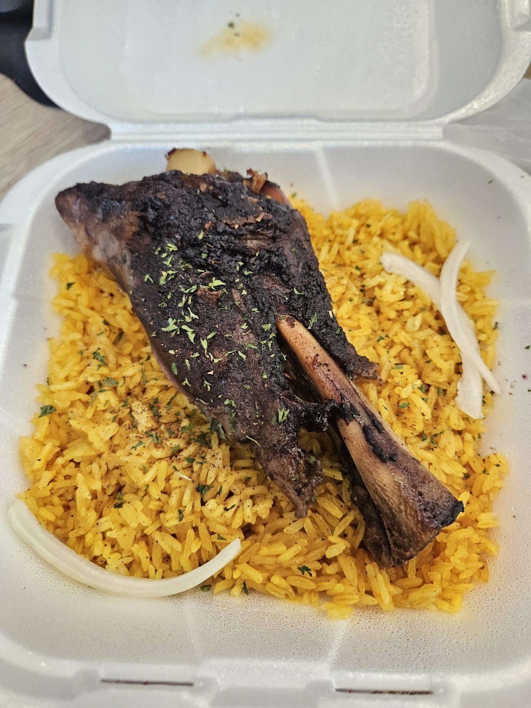
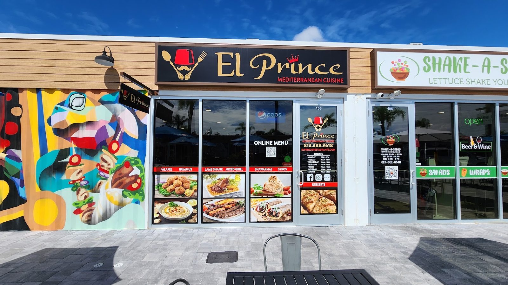
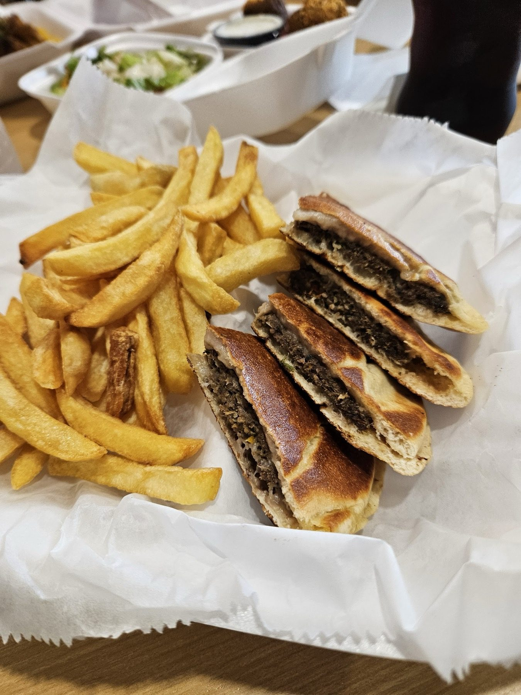
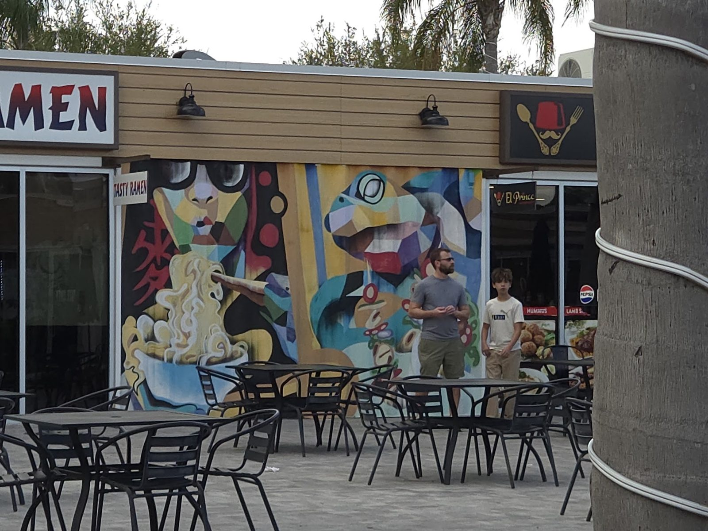
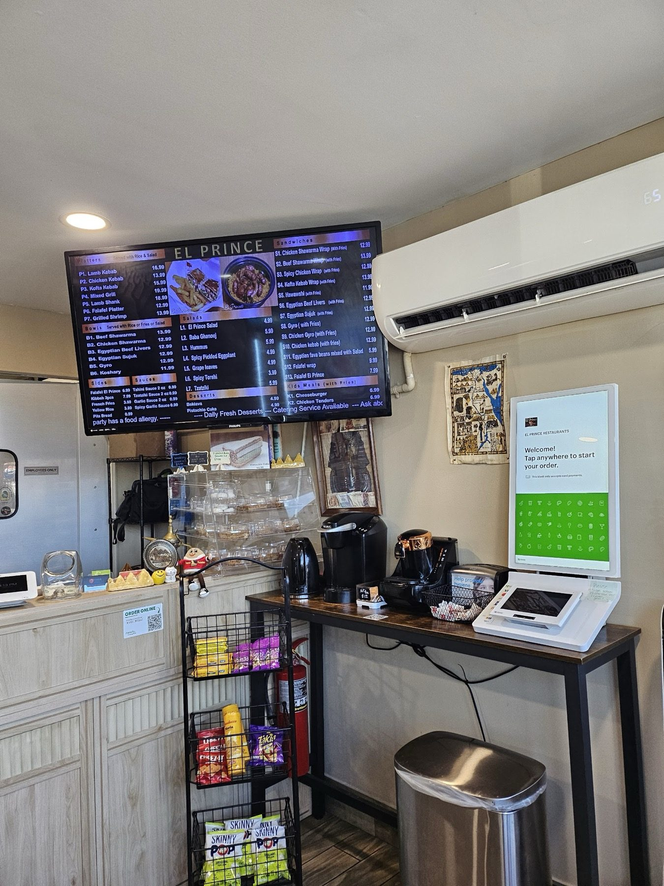
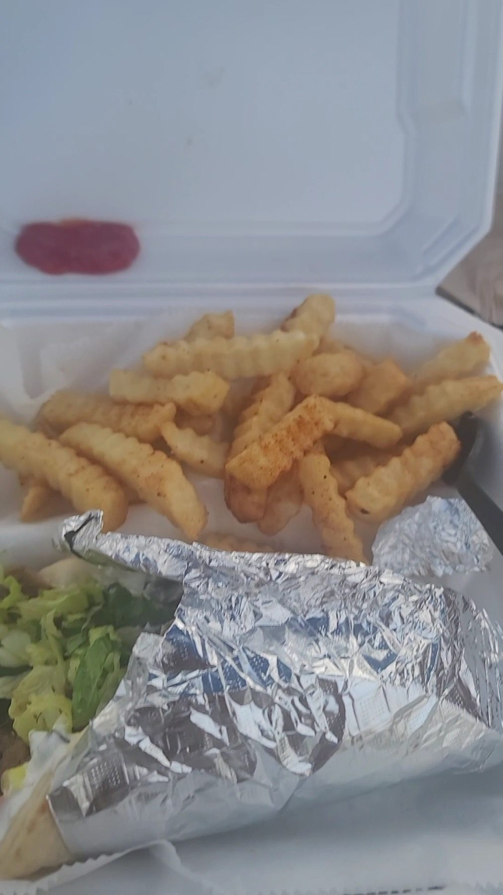

Lamb shank
Roasted lamb shank on yellow rice with onion.
Mediterranean plates and sandwiches at the Grove. Pickup, delivery or a seat outside.

What to order
Where to start.

Roasted lamb shank on yellow rice with onion.

Grilled pressed sandwiches with a basket of fries.
Shawarma, falafel, kofta, hummus and baba ghanouj.



4.2 ★ · 370 Google reviews
El Prince is SO good! The chicken shawarma bowl was amazing, and the garlic sauce takes it to another level. Easily one of the best shawarma spots I’ve had in the Tampa area. Everything was flavorful, fresh, and delicious. Definitely a spot I’ll keep coming back to!
Excellent food and service! The food came out very quick, hot and fresh. I love that every ingredient is made in house. For what you pay, the portion sizes are incredible. I ordered a chicken shawarma and could only finish half. The man who took our order and the woman who made our food were so sweet and you can tell they really care about what they do. Highly recommend!!
Very impressed! I had the lamb shank twice now and it was roasted to perfection each time. Lamb shank was fall off the bone, well seasoned, and slept on a fluffy bed of yellow rice. The cook said he is there early in the morning, specifically to start the lamb shanks, and it shows. A+ for quality and flavors!
Meet the crew
Find us in the KRATE section at the Grove of Wesley Chapel, next to a bright mural, with patio tables out front.
Shawarma, kofta, kibbeh, Egyptian sujuk and beef livers, plus halal, vegetarian and vegan options and a kids menu.